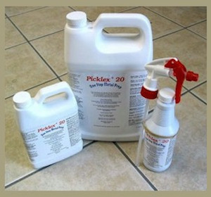
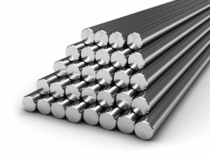
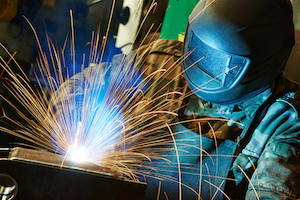

Metal Surface Preparation Chemicals

Innofacturing Solutions is a distributator of metal surface preparation chemicals, such as, Picklex 20.
- Innovative one-step metal preparation.
- Provides complete metal surface preparation before welding and finishing without rinsing.
- EPA tested and verified, green product.
- Rust remover, de-scaler, rust converter, rust inhibitor, anti-spatter, conversion coating, sealer
- Environmentally safe, non-hazardous, water based
- Works on both ferrous and non-ferrous metal surfaces.
- Made in the USA!
Specialty Metals
Innofacturing Solutions helps specify and procure specialty metals for various appications
- Tubing
- Welded and seamless
- Stainless and duplex
- Nickel and exotic alloys
- Mills in Mexico City and UK

Weld Monitoring Systems and Software

Innofacturing Solutions is a distributor of Impact weld monitoring systems and solutions. The ARCAgent™ weld monitoring system and ARClient® software are an innovative real-time weld monitoring system with wide applications.
- Manual and automatted applications
- Production auditing
- Process control and qualification
- Made in the USA!